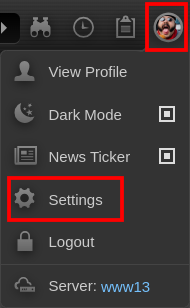
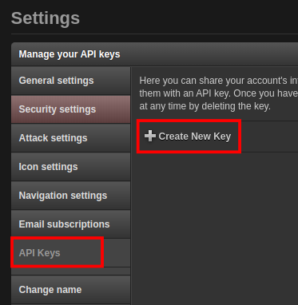
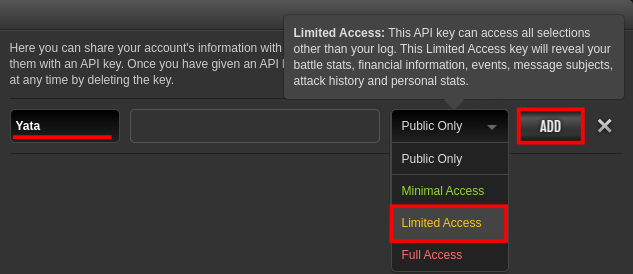
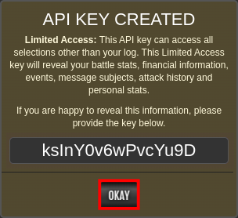
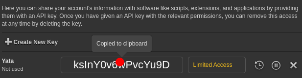
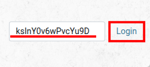
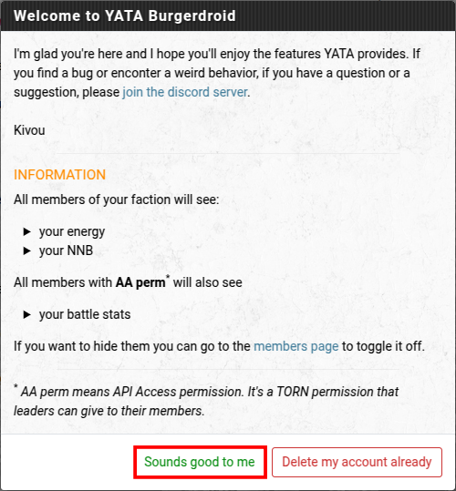
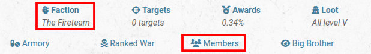
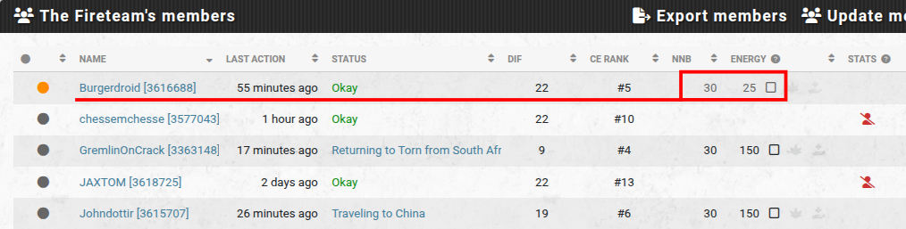
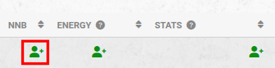

Yata Setup
Yata is required to rank up, gain access to the Faction’s Armory, and to remain in The Fire Team. Once you have completed these steps, please ask a member of the leadership to check.
Setup Instructions
- Create a Limited Access API Key
- Click on your profile image and select Settings

- From the list, select API Keys, then click on Create New Key

- Enter a meaningful name. This will help you to keep track if you have multiple API keeps.
From the drop-down list, select Limited Access.
Finally, click on ADD

A confirmation will display for your new key.

- Yata Configuration
- Click on your Torn Limited Access API key to copy it to the clipboard.

- Visit the Yata website - https://yata.yt
- Paste your Limited Access API key into the field then click on Login.

You may be presented with this window the first time you login to Yata. Click on Sounds good to me

- Click on the Factions link, and then the Members link.

- In testing this step, it got stuck waiting to load the Members list. After clicking around in a few other areas and then clicking back on Factions and Members, it loaded successfully. After doing this it seems to successfully load all the time.
Once the Members list is visible, you should see your name and information about your NNB and ENERGY

- For any Green person icons still showing, click on these so that the stat values are showing instead (as shown in the image in step 2e). If you are using a mobile device, you may need to turn it to landscape mode to see all the icons.
